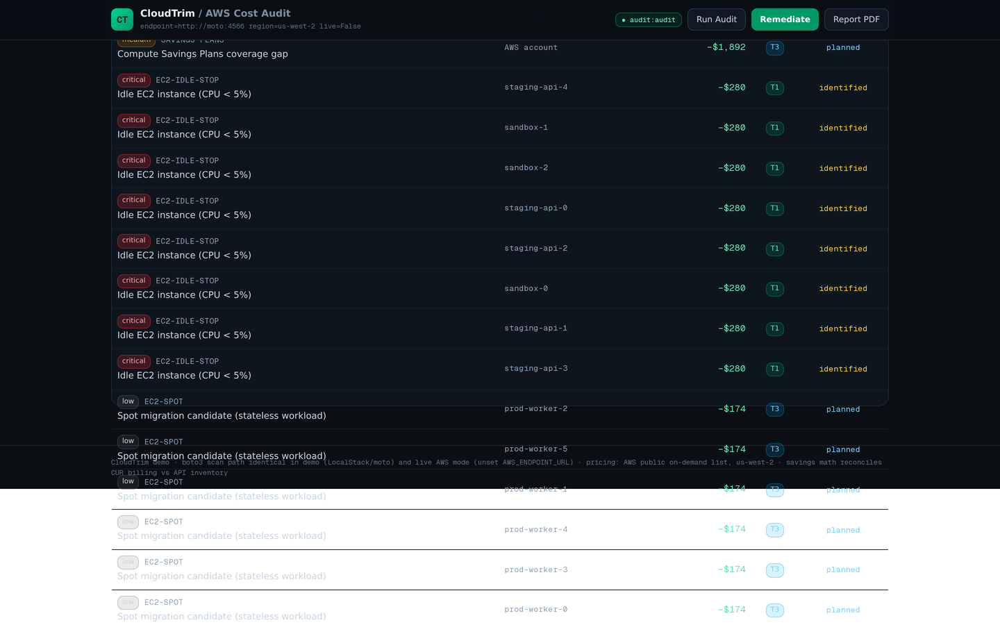
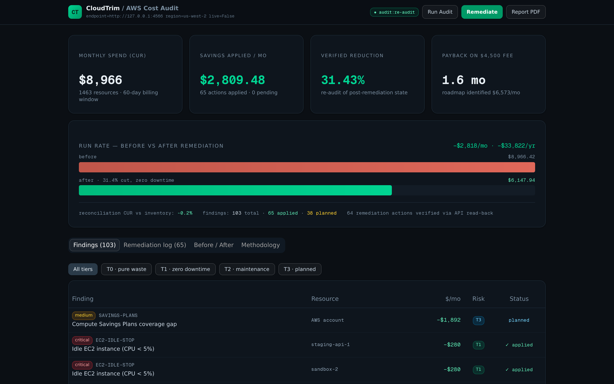
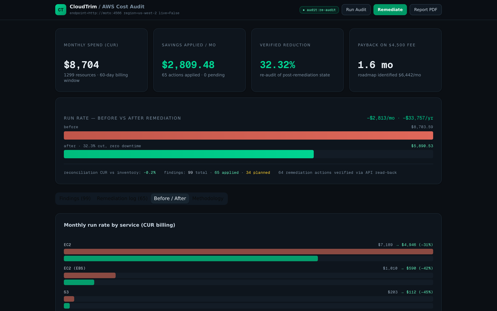
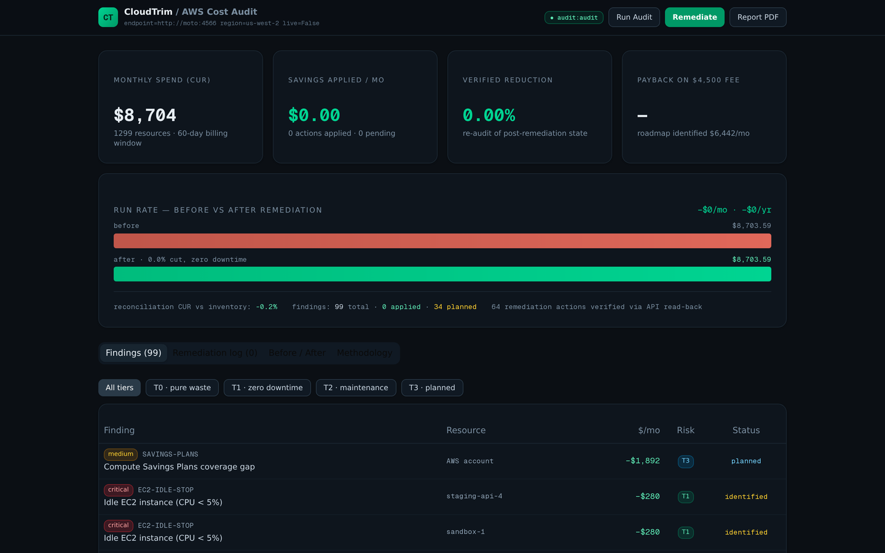

CloudTrim is a real audit engine — boto3 inventory, 22-rule finops catalog, billing-grade cost model — that finds pure waste in your AWS account and removes it with zero-downtime Terraform-native fixes. Not a spreadsheet, not a mock: every number on this page is measured from a full recorded engagement.
The full engagement, recorded live from the dashboard — seed → audit → remediate → verified before/after. Every figure is measured, not mocked.
The demo seeds a realistic 18-month-old startup account — 26 EC2 instances, 31 volumes, 22 snapshots, 2 ALBs, 4 S3 buckets, NAT gateways, all provisioned by real terraform apply — then runs the complete engagement. Savings are verified CUR-to-CUR: the billing report is regenerated from post-remediation state and a full re-audit runs against it.
The engine compresses a 35-hour manual audit into roughly 4 hours of billable engagement — the consultant spends their time on judgment, not describe-instances pagination.
Read-only IAM role in the client account. Scanner pulls the full inventory via paginated describe calls — no agents, no write access.
22-rule catalog evaluated over inventory + 14 days of CloudWatch telemetry, cross-checked against the CUR billing file.
Client-ready PDF: headline savings, tiered findings with evidence, remediation plan. The fixed-fee deliverable.
Tier 0/1 only — pure waste and in-place operations. Every action verified by API read-back. Zero customer-facing downtime.
Re-audit against regenerated CUR billing. The reduction you report to the client is the one billing shows.
Created by terraform apply, not JSON fixtures. Telemetry (CloudWatch) and billing (CUR CSV in the real AWS Cost & Usage Report schema) are generated from live API state — what an emulator can't natively provide.
The engine talks to AWS through one seam — cloudtrim/aws.py. With AWS_ENDPOINT_URL set it points at the AWS-compatible emulator; unset, the identical code scans a real AWS account through the standard credential chain.
Savings come from real us-west-2 list pricing times live inventory, cross-checked against CUR billing every audit — variance −0.2% in this run. In live audits, reconciliation catches CUR lag and pricing drift before the client does.
Every finding is tiered by blast radius, not just dollars. Tier 0 and Tier 1 execute safely inside the engagement; Tier 2/3 are costed, specified and scheduled with your team — never blindly executed.
Resources billing money and delivering nothing. Deleting them changes no customer-visible behavior.
Live AWS API operations that change what you pay, not what you serve. Applied during the engagement.
Changes that touch running workloads — scheduled with the client, never executed blind.
The big structural wins — identified, costed and scheduled as a follow-on plan.
* live-only rules — evaluate quietly on accounts where the APIs are present; the demo emulator doesn't cover them. Full specification with detection logic and savings formulas: the PRD (PDF).
The whole stack is portable — GitHub Codespaces, laptops, CI. The only demo-only component is the emulator; everything else is the shipped code.
SQLite (engine/data/cloudtrim.db) is the audit record: scans, findings, every action with before/after state and verification verdict.
Recorded from a running Codespace during the canonical E2E engagement.

The 22-rule catalog in action — tier filters, per-finding evidence, one-click remediation.

Every action recorded with before/after state and API-level verification verdict.

CUR-to-CUR proof — $8.7k → $5.9k/mo, each action verified by read-back.

Methodology and billing-vs-inventory reconciliation, visible in the dashboard.
The devcontainer brings up Docker, starts the stack, and forwards ports 3000 / 3030. Then:
4-core machine recommended. codespaces.new/adventurewave-labs/cloudtrim →
Everything is in the compose file — no Codespaces required:
engine/output/cloudtrim-audit-report.pdf — client-facing reportterraform/<stamp>-remediation/ — reviewable TF modulesThere is no "demo version" of the engine — the emulator is just the other end of one seam. Point the same code at a real account and it runs the identical scan, rules, remediation and verification.
Audit phase needs read-only describe/list/get on ec2, elbv2, s3, logs, cloudwatch, ce, cur. Remediation requires scoped write actions — applied through the engine or the generated Terraform modules via your CI.
CloudTrim is the delivery engine for a productized consulting practice — the demo above is the Standard engagement, end to end. No hourly billing, no report that sits on a shelf.
terraform apply, not JSON fixtures), the code path (production boto3 + Terraform through one seam), and the money math (list pricing × live inventory, reconciled against CUR billing). The only demo-only parts: the AWS API emulator (moto), and the seeded telemetry/billing history an emulator can't generate natively.gp2→gp3 conversion or log retention). Anything that touches running workloads is Tier 2/3: identified, costed, scheduled with your team — never blindly executed.cloudtrim audit is read-only and safe to point at production through a standard credential chain. Remediation uses scoped write actions, applied either by the engine or by the generated Terraform modules through your own CI, so approvals and change control stay in your pipeline.